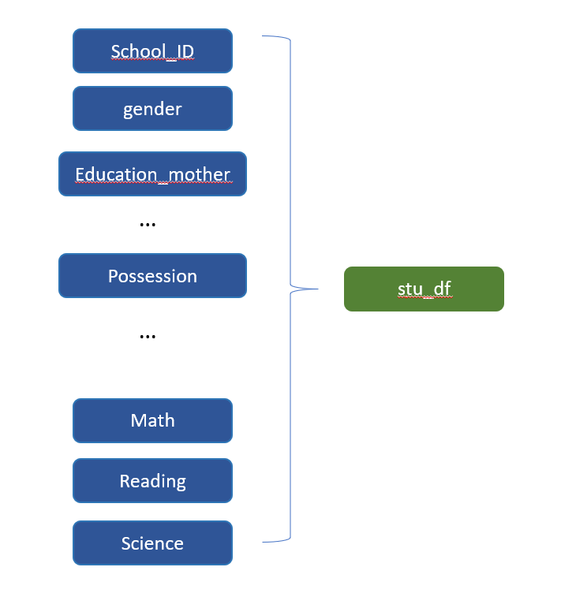
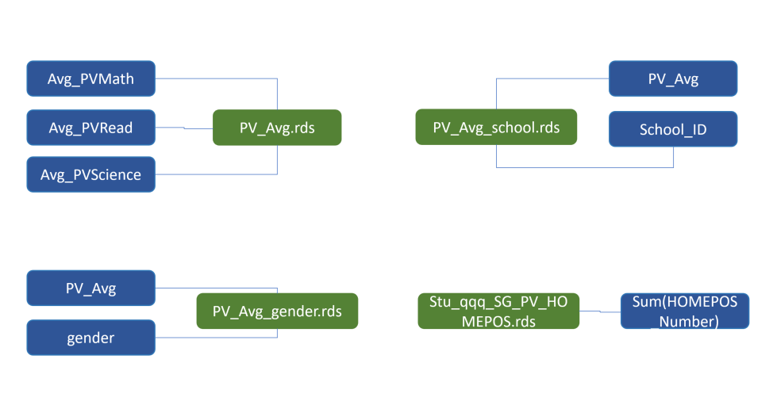
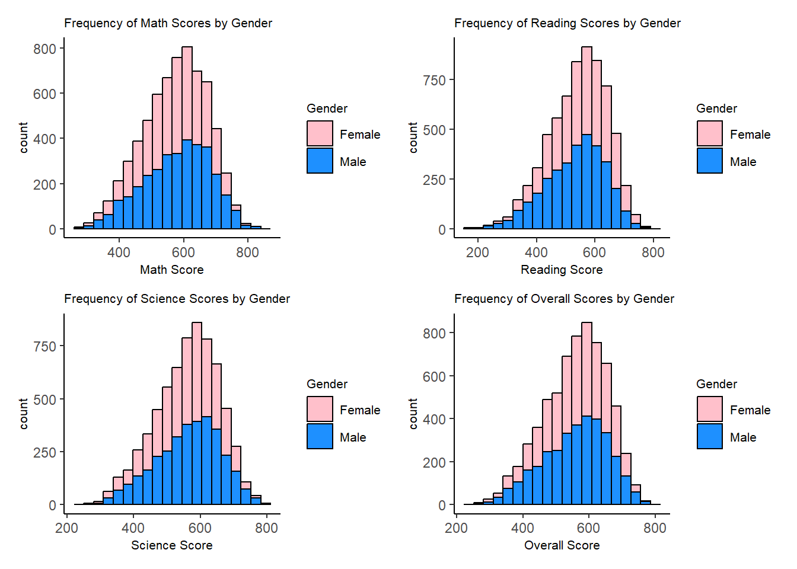
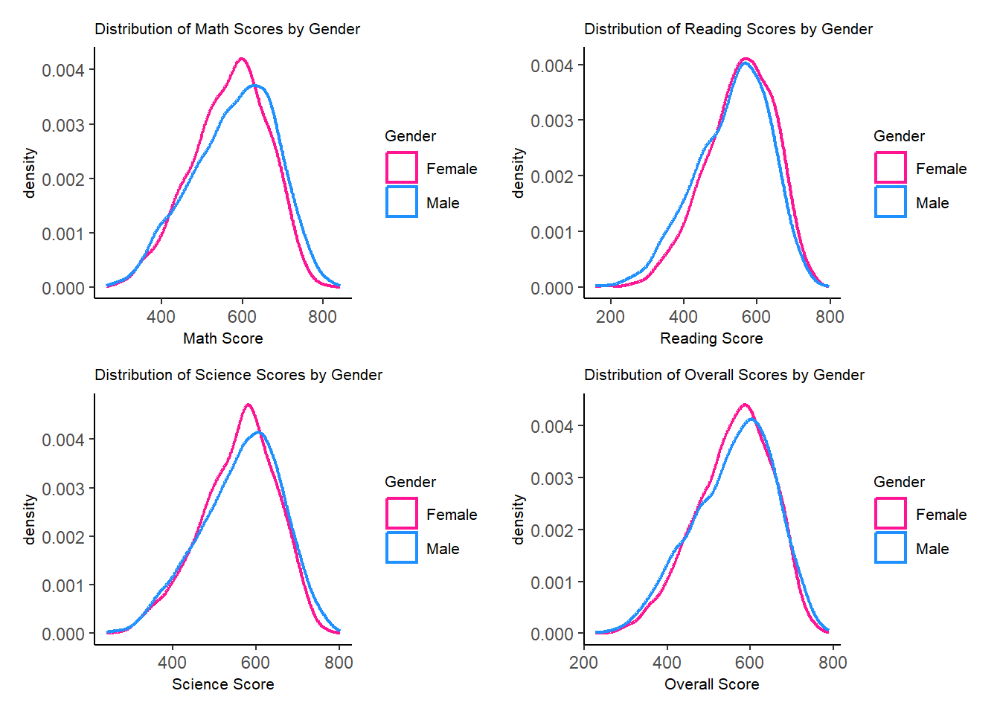
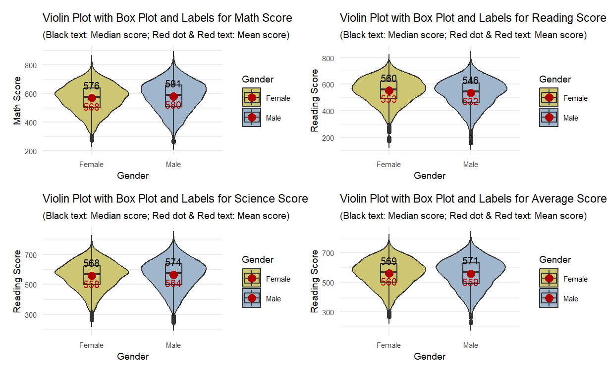
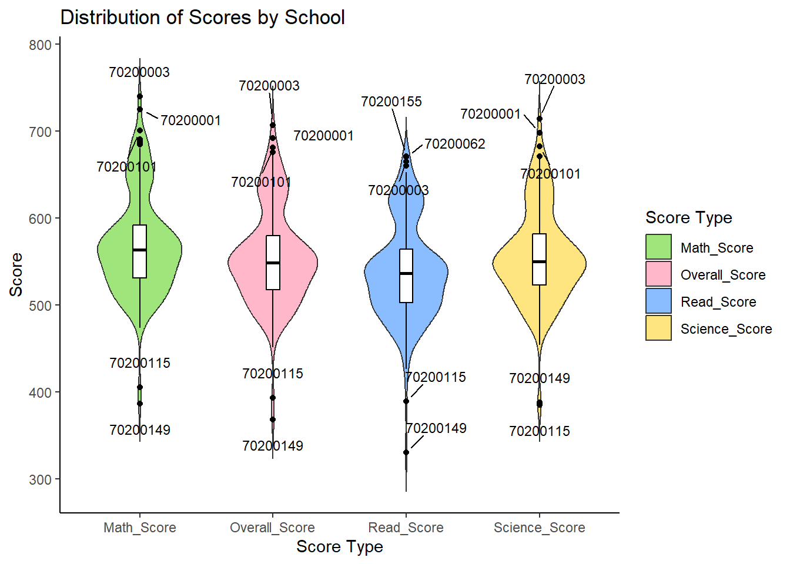
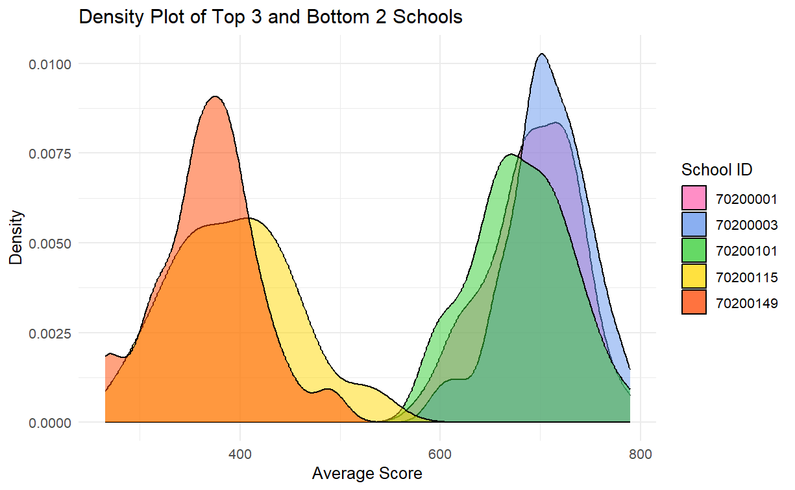
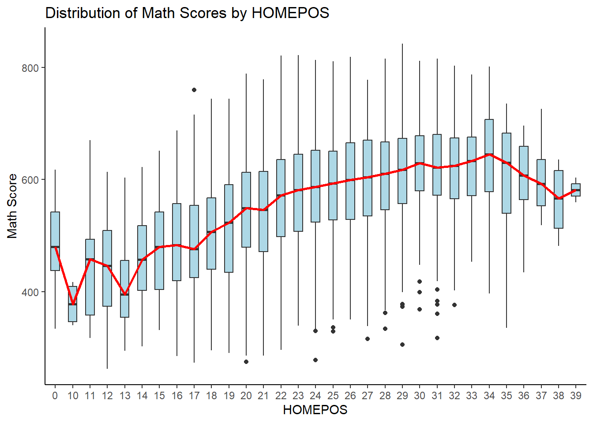
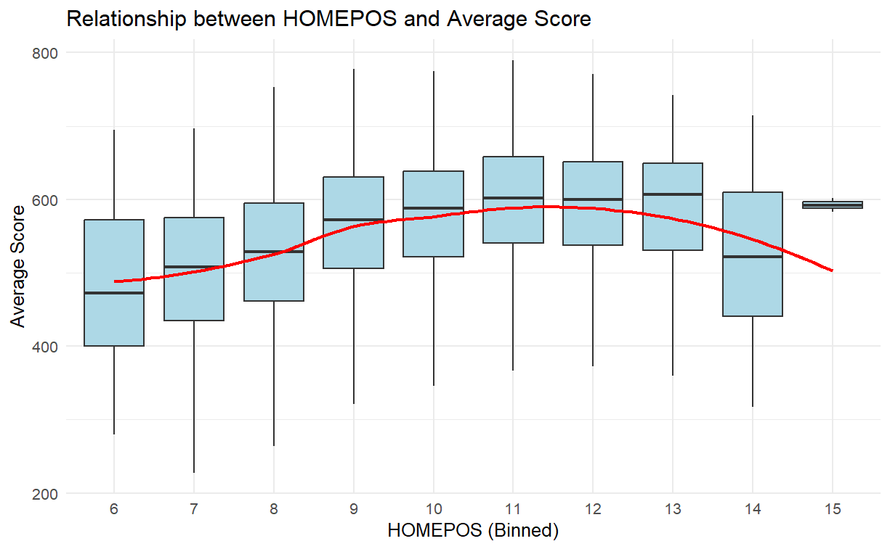

Show the code
pacman::p_load(ggrepel, ggplot2,
distributional,
ggthemes,
tidyverse,
DT,dplyr,nortest,haven,patchwork) Gao Ya
January 28, 2024
February 9, 2024
In this take home exercise, we aim to provide critique and improvements based on the plots and analysis created by peers. It will be done based on clarity and aesthetics.
The focus of this exercise will be data preparation critique, data visualization critique and conclusion presentation critique.
In the initial data preparation phase, the student opted to create individual data frames, saving them to the local disk before reloading them for subsequent use. This introduced unnecessary steps, consuming considerable time whenever a dataframe was required.

stu_qqq_SG <-
read_rds("data/stu_qqq_SG.rds")
student_columns <- "CNTSTUID"
gender_columns <- "ST004D01T"
school_columns <- "CNTSCHID"
education_column_mother <- "ST005Q01JA"
education_column_father <- "ST007Q01JA"
training_column_mother <- "ST006Q01JA"
training_column_father <- "ST008Q01JA"
possession_room_column <- "ST250Q01JA"
possession_computer_column <- "ST250Q02JA"
possession_software_column <- "ST250Q03JA"
possession_phone_column <- "ST250Q04JA"
possession_internet_column <- "ST250Q05JA"
possession_book_column <- "ST255Q01JA"
math_columns <- c("PV1MATH", "PV2MATH", "PV3MATH", "PV4MATH", "PV5MATH", "PV6MATH", "PV7MATH", "PV8MATH", "PV9MATH", "PV10MATH")
reading_columns <- c("PV1READ", "PV2READ", "PV3READ", "PV4READ", "PV5READ", "PV6READ", "PV7READ", "PV8READ", "PV9READ", "PV10READ")
science_columns <- c("PV1SCIE", "PV2SCIE", "PV3SCIE", "PV4SCIE", "PV5SCIE", "PV6SCIE", "PV7SCIE", "PV8SCIE", "PV9SCIE", "PV10SCIE")
student_ID <- stu_qqq_SG[, student_columns, drop = FALSE]
gender <- stu_qqq_SG[, gender_columns, drop = FALSE]
school_ID <- stu_qqq_SG[, school_columns, drop = FALSE]
education_mother <- stu_qqq_SG[, education_column_mother, drop = FALSE]
education_father <- stu_qqq_SG[, education_column_father, drop = FALSE]
training_mother <- stu_qqq_SG[, training_column_mother, drop = FALSE]
training_father <- stu_qqq_SG[, training_column_father, drop = FALSE]
possession_room <- stu_qqq_SG[, possession_room_column, drop = FALSE]
possession_computer <- stu_qqq_SG[, possession_computer_column, drop = FALSE]
possession_software <- stu_qqq_SG[, possession_software_column, drop = FALSE]
possession_phone <- stu_qqq_SG[, possession_phone_column, drop = FALSE]
possession_internet <- stu_qqq_SG[, possession_internet_column, drop = FALSE]
possession_book <- stu_qqq_SG[, possession_book_column, drop = FALSE]
math_avg <- rowMeans(stu_qqq_SG[, math_columns, drop = FALSE])
reading_avg <- rowMeans(stu_qqq_SG[, reading_columns, drop = FALSE])
science_avg <- rowMeans(stu_qqq_SG[, science_columns, drop = FALSE])
stu_df <- data.frame(Student_ID = student_ID,
Gender = gender,
School_ID = school_ID,
Education_mother = education_mother,
Education_father = education_father,
# Training_mother = training_mother,
# Training_father = training_father,
Possession_room = possession_room,
Possession_computer = possession_computer,
Possession_software = possession_software,
Possession_phone = possession_phone,
Possession_internet = possession_internet,
Possession_book = possession_book,
Math_Average = round(math_avg,digits=2),
Reading_Average = round(reading_avg,digits=2),
Science_Average = round(science_avg,digits=2),
Average_score=round(((math_avg+reading_avg+science_avg)/3),digits=2))
names(stu_df) <- c("Student_ID","Gender","School_ID","Education_mother",
"Education_father","Possession_room","Possession_computer",
"Possession_software","Possession_phone",
"Possession_internet","Possession_book","Math_Average",
"Reading_Average","Science_Average","Average_Score")
stu_qqq <- read_sas("data/cy08msp_stu_qqq.sas7bdat")
dimensions <- dim(stu_qqq)
cat("The student questionnaire data set has dimensions of", dimensions[1], "rows by", dimensions[2], "columns.")
stu_qqq_SG <- stu_qqq %>%
filter(CNT == "SGP")
write_rds(stu_qqq_SG, "data/stu_qqq_SG.rds")
stu_qqq_SG <- read_rds("data/stu_qqq_SG.rds")
dimensions_SG <- dim(stu_qqq_SG)
cat("The data of Singaporean students in the student questionnaire data set has dimensions of", dimensions_SG[1], "rows by", dimensions_SG[2], "columns.")
Avg_PVMath <- rowMeans(stu_qqq_SG[, c("PV1MATH", "PV2MATH", "PV3MATH", "PV4MATH", "PV5MATH", "PV6MATH", "PV7MATH", "PV8MATH", "PV9MATH", "PV10MATH")])
Avg_PVRead <- rowMeans(stu_qqq_SG[, c("PV1READ", "PV2READ", "PV3READ", "PV4READ", "PV5READ", "PV6READ", "PV7READ", "PV8READ", "PV9READ", "PV10READ")])
Avg_PVScience <- rowMeans(stu_qqq_SG[, c("PV1SCIE", "PV2SCIE", "PV3SCIE", "PV4SCIE", "PV5SCIE", "PV6SCIE", "PV7SCIE", "PV8SCIE", "PV9SCIE", "PV10SCIE")])
PV_Avg <- data.frame(
CNTSTUID = stu_qqq_SG$CNTSTUID,
Avg_PVMath = Avg_PVMath,
Avg_PVRead = Avg_PVRead,
Avg_PVScience = Avg_PVScience
)
PV_Avg$Avg_PVOverall <- rowMeans(PV_Avg[, c("Avg_PVMath", "Avg_PVRead", "Avg_PVScience")], na.rm = TRUE)
write_rds(PV_Avg, "data/stu_qqq_SG_PV_Avg.rds")
head(PV_Avg)
PV_Avg_gender <- cbind(PV_Avg, gender = stu_qqq_SG$ST004D01T)
write_rds(PV_Avg_gender, "data/stu_qqq_SG_PV_Avg_gender.rds")
head(PV_Avg_gender)The proposed data preparation streamlines the process by consolidating all data into a single stu_df. Extracting columns from stu_qqq_SG and merging them into stu_df results in a compact dataset that is quick and straightforward to read, significantly enhancing efficiency.
The plots below shows the original design of the distribution of Singapore student performance by gender.


| Clarity | Aesthetics |
|---|---|
|
|
| Limitation |
|---|
|
It can be further developed by plotting a 2x2 violin plot combine with boxplot with a red dot representing the mean, which shall present the data distribution especially the quantile more clearly.
p1 <- ggplot(PV_Avg_gender, aes(x = as.factor(gender), y = Avg_PVMath, fill = as.factor(gender))) +
geom_violin() +
geom_boxplot(width = 0.2, position = position_dodge(width = 0.75)) +
stat_summary(
fun = median,
geom = "text",
aes(label = round(after_stat(y), )),
position = position_dodge(width = 0.75),
vjust = -1,
size = 3,
color = "black"
) +
stat_summary(
fun = mean,
geom = "text",
aes(label = round(after_stat(y), )),
position = position_dodge(width = 0.75),
vjust = 1.5,
size = 3,
color = "#B00000"
) +
# Add geom_text layer for displaying mean dot in red
stat_summary(fun = mean, geom = "point", shape = 16, size = 3, color = "#B00000",
position = position_nudge(x = 0.0))+
labs(title = "Violin Plot of PV Math Scores by Gender",
x = "Gender",
y = "Average PV Math Score") +
scale_fill_manual(values = c("khaki3","slategray3"), name = "Gender",
labels = c("1" = "Female", "2" = "Male"))+
scale_x_discrete(labels = c("1" = "Female", "2" = "Male")) +
theme_minimal()+
theme(
text = element_text(size = 8), # Set the general text size
plot.title = element_text(size = 10), # Set the title size
plot.subtitle = element_text(size = 8) # Set the subtitle size
)
p2 <- ggplot(PV_Avg_gender, aes(x = as.factor(gender), y = Avg_PVRead, fill = as.factor(gender))) +
geom_violin() +
geom_boxplot(width = 0.2, position = position_dodge(width = 0.75)) +
stat_summary(
fun = median,
geom = "text",
aes(label = round(after_stat(y), )),
position = position_dodge(width = 0.75),
vjust = -1,
size = 3,
color = "black"
) +
stat_summary(
fun = mean,
geom = "text",
aes(label = round(after_stat(y), )),
position = position_dodge(width = 0.75),
vjust = 1.5,
size = 3,
color = "#B00000"
) +
# Add geom_text layer for displaying mean dot in red
stat_summary(fun = mean, geom = "point", shape = 16, size = 3, color = "#B00000",
position = position_nudge(x = 0.0))+
labs(title = "Violin Plot of PV Reading Scores by Gender",
x = "Gender",
y = "Average PV Reading Score") +
scale_fill_manual(values = c("khaki3","slategray3"), name = "Gender",
labels = c("1" = "Female", "2" = "Male"))+
scale_x_discrete(labels = c("1" = "Female", "2" = "Male")) +
theme_minimal()+
theme(
text = element_text(size = 8), # Set the general text size
plot.title = element_text(size = 10), # Set the title size
plot.subtitle = element_text(size = 8) # Set the subtitle size
)
p3 <- ggplot(PV_Avg_gender, aes(x = as.factor(gender), y = Avg_PVScience, fill = as.factor(gender))) +
geom_violin() +
geom_boxplot(width = 0.2, position = position_dodge(width = 0.75)) +
stat_summary(
fun = median,
geom = "text",
aes(label = round(after_stat(y), )),
position = position_dodge(width = 0.75),
vjust = -1,
size = 3,
color = "black"
) +
stat_summary(
fun = mean,
geom = "text",
aes(label = round(after_stat(y), )),
position = position_dodge(width = 0.75),
vjust = 1.5,
size = 3,
color = "#B00000"
) +
# Add geom_text layer for displaying mean dot in red
stat_summary(fun = mean, geom = "point", shape = 16, size = 3, color = "#B00000",
position = position_nudge(x = 0.0))+
labs(title = "Violin Plot of PV Science Scores by Gender",
x = "Gender",
y = "Average PV Science Score") +
scale_fill_manual(values = c("khaki3","slategray3"), name = "Gender",
labels = c("1" = "Female", "2" = "Male"))+
scale_x_discrete(labels = c("1" = "Female", "2" = "Male")) +
theme_minimal()+
theme(
text = element_text(size = 8), # Set the general text size
plot.title = element_text(size = 10), # Set the title size
plot.subtitle = element_text(size = 8) # Set the subtitle size
)
p4 <- ggplot(PV_Avg_gender, aes(x = as.factor(gender), y = ((Avg_PVMath+Avg_PVRead+Avg_PVScience)/3), fill = as.factor(gender))) +
geom_violin() +
geom_boxplot(width = 0.2, position = position_dodge(width = 0.75)) +
stat_summary(
fun = median,
geom = "text",
aes(label = round(after_stat(y), )),
position = position_dodge(width = 0.75),
vjust = -1,
size = 3,
color = "black"
) +
stat_summary(
fun = mean,
geom = "text",
aes(label = round(after_stat(y), )),
position = position_dodge(width = 0.75),
vjust = 1.5,
size = 3,
color = "#B00000"
) +
# Add geom_text layer for displaying mean dot in red
stat_summary(fun = mean, geom = "point", shape = 16, size = 3, color = "#B00000",
position = position_nudge(x = 0.0))+
labs(title = "Violin Plot of PV Average Scores by Gender",
x = "Gender",
y = "Average PV Average Score") +
scale_fill_manual(values = c("khaki3","slategray3"), name = "Gender",
labels = c("1" = "Female", "2" = "Male"))+
scale_x_discrete(labels = c("1" = "Female", "2" = "Male")) +
theme_minimal()+
theme(
text = element_text(size = 8), # Set the general text size
plot.title = element_text(size = 10), # Set the title size
plot.subtitle = element_text(size = 8) # Set the subtitle size
)
p1+p2+p3+p4
Improvements:
Enhanced Distribution Comparison:
Violin plots combine aspects of boxplots and kernel density plots, providing a more comprehensive view of the data distribution.
The width of the violin plot represents the density of scores, making it easier to compare distributions between genders.
The presentation of grid lines enhance the clarity of presentation.
Boxplot Insights:
Boxplots within the violin plot offer insights into the quartiles, median, and potential outliers, providing a summary of central tendency and spread. For example, we can observe that generally male students have a wider performance spread.
Boxplots are effective in highlighting any gender-based differences in terms of median and spread. From the box plot with red dot representing mean score, we can conclude that the average performance of female and male are close. Female students have higher mean and median in Reading, male students have better performance in Math and Science.
Outlier Detection:
The combination of violin and boxplots facilitates easy identification of outliers in each gender category. It can be observed that for each sub-plot, there are outliers at the lower end.
Outliers can be crucial in understanding extreme scores and potential factors influencing them.
The following plots are the original design. Violin plot with box-plot and labeled the top 3 schools and bottom 2 schools.

| Clarity | Aesthetics |
|---|---|
|
|
| Possible Improvements |
|---|
|
The following is the proposed density plot of top 3 schools and bottom 2 schools.
# Filter data for top 3 and bottom 2 schools
top_schools <- stu_df[stu_df$School_ID %in% c(70200003, 70200001, 70200101), ]
bottom_schools <- stu_df[stu_df$School_ID %in% c(70200115, 70200149), ]
# Create density plots
ggplot() +
geom_density(data = top_schools, aes(x = Average_Score, fill = as.factor(School_ID)), alpha = 0.5) +
geom_density(data = bottom_schools, aes(x = Average_Score, fill = as.factor(School_ID)), alpha = 0.5) +
labs(title = "Density Plot of Top 3 and Bottom 2 Schools",
x = "Average Score",
y = "Density",
fill = "School ID") +
scale_fill_manual(values = c("#FF69B4", "#6495ED", "#32CD32", "#FFD700", "#FF4500")) +
theme_minimal()
The initial plot is clear and visually appealing. The only potential improvement that comes to mind is the red line running through the midpoint of each box plot’s median. However, the line appears jagged, making it challenging to discern the pattern and trend in the relationship between score and the number of home possessions.
ggplot(data = PV_Avg_HOMEPOS, aes(x = factor(Home_Possessions), y = Avg_PVOverall)) +
geom_boxplot(width = 0.5, fill = "#D2B4E8") +
stat_summary(fun = "median", geom = "line", aes(group = 1), color = "red", linewidth = 1) +
labs(x = "HOMEPOS", y = "Overall Score", title = "Distribution of Overall Scores by HOMEPOS") +
theme_classic()
This code chunk includes a smoothing line (geom_smooth) using the loess method, providing a visual representation of the trend in the relationship between HOMEPOS and Average_Score. This can be useful for identifying overall patterns and trends in the data.
pos_df <- data.frame(
HOMEPOS = rowSums(stu_df[, c("Possession_book", "Possession_internet", "Possession_phone",
"Possession_software", "Possession_computer", "Possession_room")]),
Average_Score = stu_df$Average_Score
)
ggplot(data = na.omit(pos_df), aes(x = factor(HOMEPOS), y = Average_Score)) +
geom_boxplot(fill = "lightblue", outlier.shape = NA) +
geom_smooth(aes(group = 1), method = "loess", se = FALSE, color = "red", size = 1) +
labs(x = "HOMEPOS (Binned)", y = "Average Score", title = "Relationship between HOMEPOS and Average Score") +
theme_minimal()
In the student’s project, which includes plots and plain text, incorporating div elements using RStudio and formatting them with CSS would enhance the presentation. This feature enables the creation of colorful text boxes with borders and background colors, providing an aesthetically appealing and visually engaging layout. Additionally, the use of div elements allows for the insertion of icons, effectively drawing attention to specific content within the project.
The following is the example of the div element.
Key Learning Point: